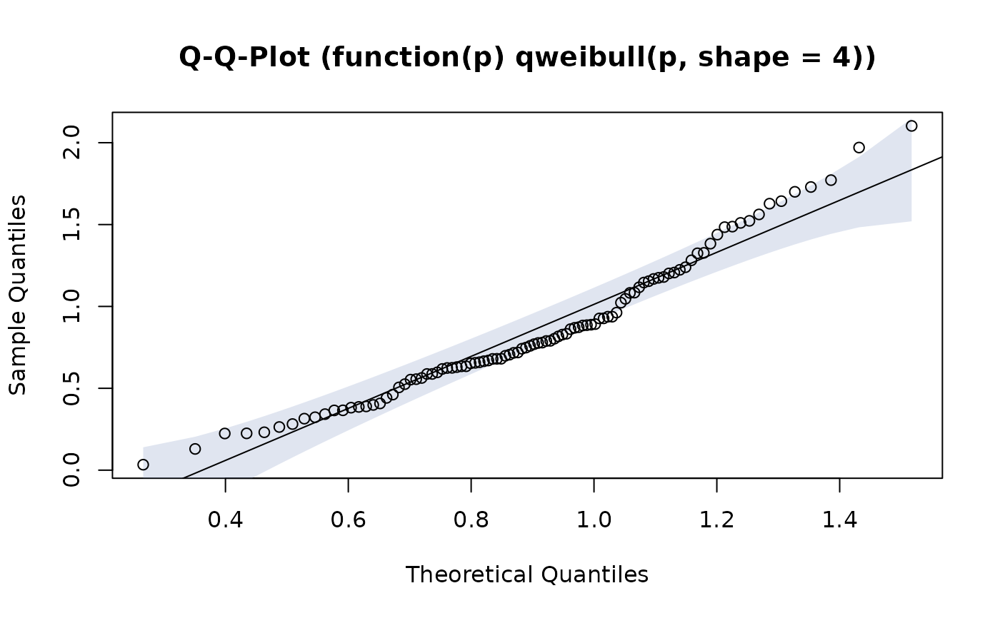

QQ-Plot for Any Distribution
PlotQQ.RdCreate a QQ-plot for a variable of any distribution. The assumed underlying distribution can be defined as a function of f(p), including all required parameters. Confidence bands are provided by default.
PlotQQ(x, qdist=qnorm, main = NULL, xlab = NULL, ylab = NULL, datax = FALSE, add = FALSE, args.qqline = NULL, conf.level = 0.95, args.cband = NULL, ...)
Arguments
| x | the data sample |
|---|---|
| qdist | the quantile function of the assumed distribution. Can either be given as simple function name or defined as own function using the required arguments. Default is |
| main | the main title for the plot. This will be "Q-Q-Plot" by default |
| xlab | the xlab for the plot |
| ylab | the ylab for the plot |
| datax | logical. Should data values be on the x-axis? Default is |
| add | logical specifying if the points should be added to an already existing plot; defaults to |
| args.qqline | arguments for the qqline. This will be estimated
as a line through the 25% and 75% quantiles by default, which is the same procedure as |
| conf.level | confidence level for the confidence interval. Set this to |
| args.cband | list of arguments for the confidence band, such as color or border (see |
| ... | the dots are passed to the plot function. |
Details
The function generates a sequence of points between 0 and 1 and transforms those into quantiles by means of the defined assumed distribution.
Note
The code is inspired by the tip 10.22 "Creating other Quantile-Quantile plots" from R Cookbook and based on R-Core code from the function qqline. The calculation of confidence bands are rewritten based on an algorithm published in the package BoutrosLab.plotting.general.
References
Teetor, P. (2011) R Cookbook. O'Reilly, pp. 254-255.
Author
Andri Signorell <andri@signorell.net>, Ying Wu <Ying.Wu@stevens.edu>
See also
Examples
z <- rchisq(100, df=5) PlotQQ(z, function(p) qchisq(p, df=5), args.qqline=list(col=2, probs=c(0.1, 0.6)), main=expression("Q-Q plot for" ~~ {chi^2}[nu == 3]))# add 5 random sets for(i in 1:5){ z <- rchisq(100, df=5) PlotQQ(z, function(p) qchisq(p, df=5), add=TRUE, args.qqline = NA, col="grey", lty="dotted") }